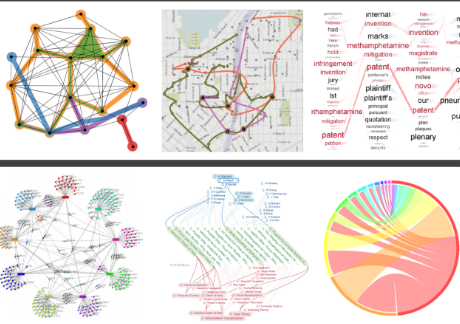

CSC2537/STA2555
Fall 2023
Information Visualization
Instructor : Fanny Chevalier
Class: Tuesdays, 4pm-6pm
Purpose
 Visual perception...
Visual perception...
This course will study techniques and algorithms for creating effective visualizations based on principles from graphic design, visual art, perceptual psychology, and cognitive science. The course is targeted both towards students interested in using visualization in their own work, as well as students interested in building better visualization tools and systems. Students will conduct reading of scientific research papers. A final project will make‐up most of the grade (60%), while student presentation skills and in readings will also be emphasized.
 ... evaluation.
... evaluation.
 ... applications
... applications
... visualization techniques
 ... data models
... data models